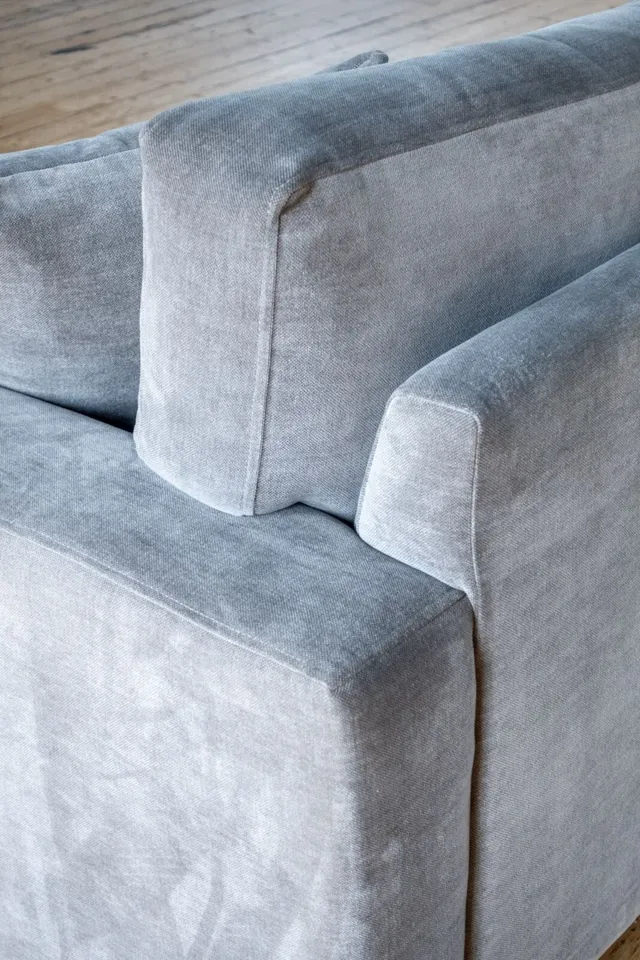

Tailored comfort
Marlow
Sofas from £1,595Armchairs from £1,345Eligible mainland delivery included
A tailored profile and layered seat cushions. Easy to place, inviting to come home to.
Explore MarlowThoughtfully chosen sofas and armchairs, handmade in Lancashire. Find the shape, size and fabric that feel at home in your space.
Four distinctive designs. A more personal way to choose.
We bring together considered silhouettes, tactile upholstery and British craftsmanship. A focused collection gives every piece room to earn its place.
From a compact armchair to a generous four-seater, we help you weigh up proportion, fabric and everyday use before your furniture is made.
Our approach ↗Four designs, each available as an armchair, love seat or sofa. Choose a size, fabric and colour to see your delivery-inclusive retail price.
A tailored profile and layered seat cushions. Easy to place, inviting to come home to.
Explore Marlow
Clean square arms, generous depth and a relaxed shape with fixed upholstery.
Explore Calder
Slim arms and deep proportions, with a removable washable cover in Cambridge fabric.
Explore Alder
Sculpted arms and architectural lines, softened by layered foam-and-fibre cushions.
Explore Rowan
Solid hardwood frames and sprung bases provide the foundation. Each design has its own balance of cushioning, shape and upholstery, brought together by experienced makers in Lancashire.
Tell us how you live, the room you are furnishing and the feel you prefer. We will help you compare the options.
Meet our makers ↗Compare the designs and dimensions. We can help with room proportions and access measurements.
Explore size, fabric and colour. See your total price online, then request your order. We confirm fabric availability, delivery access and the final order details before payment.
Allow approximately 6–8 weeks for production, then 1–2 weeks for delivery, subject to materials and order confirmation.
Working on an interior project? Talk to us about quantities, upholstery and the specification your space needs. Commercial suitability is checked for each project.
Explore TradeShare your room, preferred design and delivery postcode. We will help you take the next step.
Compare proportions, explore the upholstery and think through the route into your room.
Sizes, seat measurements, covers and prices, side by side.
Find your shape ↗02Explore real textures and enquire about physical samples.
Explore the fabrics ↗03Plan the footprint, check access and understand everyday care.
Read the choosing guide ↗